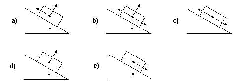

01.
(UFLA) Um bloco de gelo desprende-se de uma geleira e desce um plano inclinado com atrito. Qual o diagrama que representa corretamente as forças que atuam sobre o bloco?

02.
Um bloco de massa de 4,0 kg é abandonado num plano inclinado de 37º com a horizontal com o qual tem coeficiente de atrito 0,25. A aceleração do movimento do bloco é, em m/s2:
Dados: g = 10 m/s2; sen 37º = 0,60 e cos 37º = 0,80.
|
a) 2,0. b) 4,0. |
c) 6,0. d) 8,0. |
e) 10,0. |
03.
(UFJF) Um carro desce por um plano inclinado, continua movendo- se por um plano horizontal e, em seguida, colide com um poste. Ao investigar o acidente, um perito de trânsito verificou que o carro tinha um vazamento de óleo que fazia pingar no chão gotas em intervalos de tempo iguais. Ele verificou também que a distância entre as gotas era constante no plano inclinado e diminuía gradativamente no plano horizontal. Desprezando a resistência do ar, o perito pode concluir que o carro:
a) vinha acelerando na descida e passou a frear no plano horizontal.
b) descia livremente no plano inclinado e passou a frear no plano horizontal.
c) vinha freando desde o trecho no plano inclinado.
d) não reduziu a velocidade até o choque.
04.
(UFSC) O bloco da figura desce espontaneamente o plano iniciando com velocidade constante em trajetória retilínea.

Desprezando-se qualquer ação do ar, durante esse movimento, atuam sobre o bloco
a) duas forças, e ambas realizam trabalho.
b) duas forças, mas só uma realiza trabalho.
c) três forças, e todas realizam trabalho.
d) três forças, mas só duas realizam trabalho.
e) três forças, mas só uma realiza trabalho.
05.
(EXAME NACIONAL 2020) Qual dos diagramas pode representar, na mesma escala, as forças que atuam na esfera durante a descida no plano inclinado?